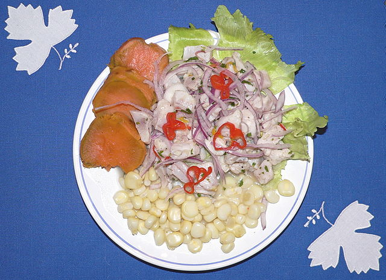

КОЛУМБІЙСЬКА КУХНЯ
Кулінарні традиції Про країну
Коржі з кукурудзяного тіста – Арепа
Традиційний картопляний суп – Ахіако
Салат з риби чи морепродуктів – Севіче 
Автор сайту: вчитель інформатики. 2022 рік